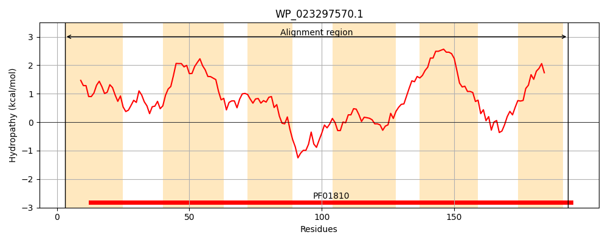
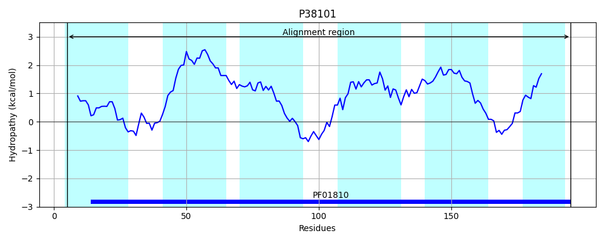
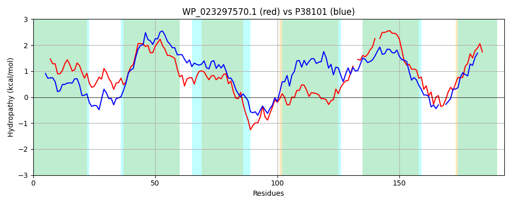

Hit Accession: P38101
Hit TCID: 2.A.76.1.4
Hit Description: gnl|BL_ORD_ID|10162 gnl|TC-DB|P38101|2.A.76.1.4 Hypothetical protein yfiK - Escherichia coli.
Mach Len: 193
e:0.000000
Query TMS Count : 6
Hit TMS Count: 6
TMS-Overlap Score: 6.400000
Predicted Substrates:CHEBI:74846;azaserine, CHEBI:4050;cysteine
BLAST Alignment:
Score: 144 , Bit scores: 60 bits, E-value: 1.7e-11, Alignment length: 193, Percentage identity: 23
Query: 3 LMATMFLYSLALSFSPGPVNMVIISSGVMHGFRKTFAFVSGATLGFTLLLIFVSFGLYTVIASHPSFFKYLNVLGSIFILYQGYKIATSQPDWSLKKGNAPGFVQGVLMQWFNPKAWAACTSGTTLFSEPST-SLPLILFI-IIYFFICYISLSIWAIFGDKMSTFLQGRAQMRIFNLLMGGVLCVIACYMLY 193
L++ + Y+L + +PGP N++ +SS HGFR++ ++G +LGF ++++ + +++ P+ L+ G+ +I++ +KIATS + F +Q+ N K + + F P T +L ++ + ++ I WA+ G R R N+++ +L A + Y
Sbjct: 5 LLSAFWTYTLITAMTPGPNNILALSSATSHGFRQSTRVLAGMSLGFLIVMLLCAGISFSLAVIDPAAVHLLSWAGAAYIVWLAWKIATSPTKEDGLQAKPISFWASFALQFVNVKIILYGVTALSTFVLPQTQALSWVVGVSVLLAMIGTFGNVCWALAGHLFQRLF--RQYGRQLNIVLALLLVYCAVRIFY 195 | Protein Hydropathy Plots: |
|---|
|  |  |
Pairwise Alignment-Hydropathy Plot:
|
|---|
|  |